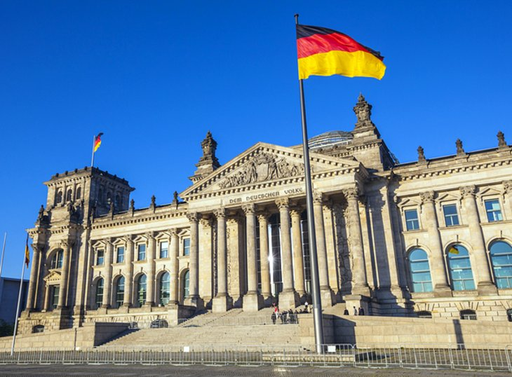
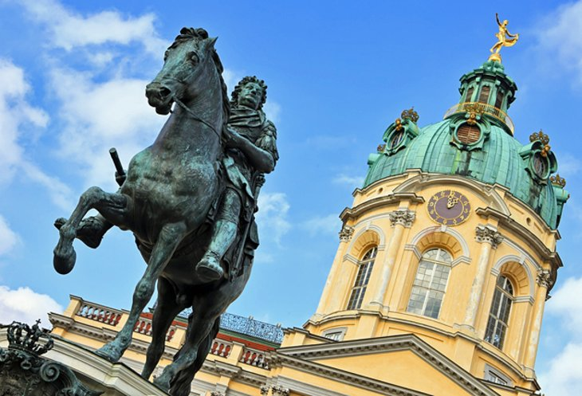
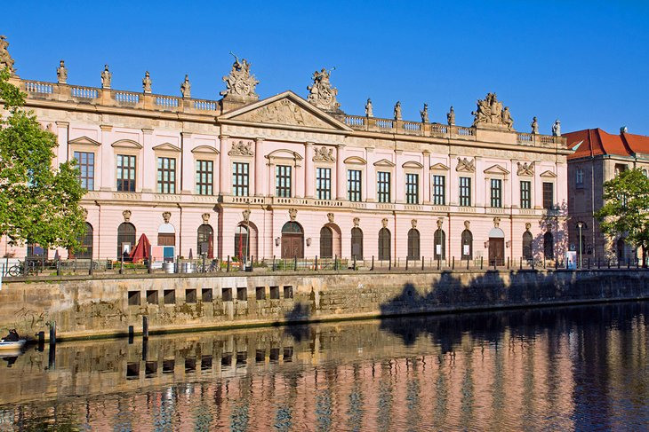
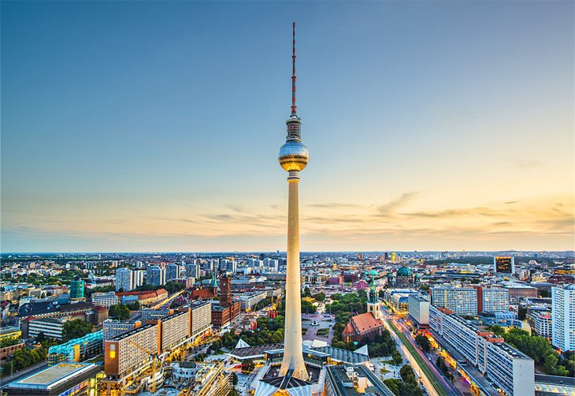

The Neoclassical gate was commissioned by King Frederick Wilhelm II in 1788, and its design was inspired by the Propylaea in Athens' Acropolis. The sandstone monument is 26 meters tall, standing in the Mitte district's Pariser Platz, just a block from the Reichstag building. During the Cold War, its physical and symbolic position as a blocked gate along the Berlin Wall made it a frequent site for demonstrations by West Berliners. It's also famous for being the backdrop of US President Ronald Reagan's 1987 entreaty to Soviet leader Mikhail Gorbachev to tear down the wall. It was also the scene of a poignant gesture in 1999, when political leaders from a variety of countries—including Germany's Angela Merkel, Russia's Mikhail Gorbachev, and Poland's Lech Walesa—together walked through the gate to commemorate the tearing down of the Berlin Wall 10 years earlier.
The Reichstag (Reichstagsgebäude) was originally completed in 1894 where the Neo-Renaissance palace served as the home of the German Empire's Imperial Diet until it burned in 1933. It was not used again until after the reunification of Germany, at which point it underwent a 10-year reconstruction and finally became the home of the German Parliament in 1999. A highlight of this magnificent reconstruction is the replacement dome, the Kuppel. Made of glass, it offers superb views of the surrounding city, especially at night from the Rooftop Restaurant. During the summer, light shows and film nights are scheduled and are memorable to watch.
This is Berlin's oldest and largest Prussian estate and was for decades, the primary residence for german royalty. The palace has many extraordinary features, including a massive 50-meter-high central dome, opulent Baroque and Rococo décor throughout its expansive rooms, and a large garden that was inspired by the gardens at Versailles. The New Wing has State Apartments and fine Banqueting Halls. it was built in 1746, and it's here visitors get a glimpse of the splendor in which the Prussian Kings and Electors lived, from Frederick I's bedroom and study with their fine furnishings and paintings, to the State Dining Room and 42-meter-long Golden Gallery with its rich, gilded stucco.

Sandwiched between the River Spree and the Kupfergraben in a 400-meter-long canal, Spree Island—better known as Museum Island (Museumsinsel)—is one of the city's most important UNESCO World Heritage Sites. Many of Berlin's oldest and most important museums are ocated on the island, such as the Old Museum (Altes Museum), which was built in 1830 to house the Crown Jewels and other such treasures. The New Museum (Neues Museum), destroyed during WWII, was rebuilt and opened again in 2009. It serves as the home of extensive collections from the Egyptian Museum, the Papyrus Collection, and the Collection of Classical Antiquities. The Old National Gallery (Alte Nationalgalerie), opened in 1876, displays Neoclassical sculpture and paintings from 1815-1848, as well as Impressionist and early Modernist pieces. The Bode Museum houses a collection of Byzantine art, as well as a large sculpture collection spanning from medieval times to the late 1700s. The city's most popular museum, the Pergamon features a Museum of Islamic Art, the Ishtar Gate, and reconstructed historic buildings from the Middle East. The newest museum attraction, the Humboldt Forum opened in 2019 and houses the Ethnological Museum of Berlin and the Museum of Asian Art.
Established to mark Berlin's 750th anniversary in 1987, the German Historical Museum, consists of a number of historic exhibition halls jam-packed with fascinating displays of artifacts relating to various periods and events from the country's founding right up to the fall of the Berlin Wall. It also includes exhibits relating to medicine, fashion, religion, printing, art, and photography. Military buffs are also well catered to with the museum's vast collection of historic armor, weapons, and uniforms. There's also a cinema located on-site, and a research library that's open to the public. English language guided tours are available. It also has a cloakroom and café.
The 368-meter-tall Berliner Fernsehturm (Berlin Television Tower) opened in 1970 and is Europe's third-tallest freestanding structure. Originally constructed to mark the prowess of communism (it's located in the former East Berlin district), the landmark can be picked out from pretty much every corner of the city, making it more significant as a symbol of the city's reunification in the 1980s. It has an observation deck you can visit, and has a revolving restaurant 207 meters high.